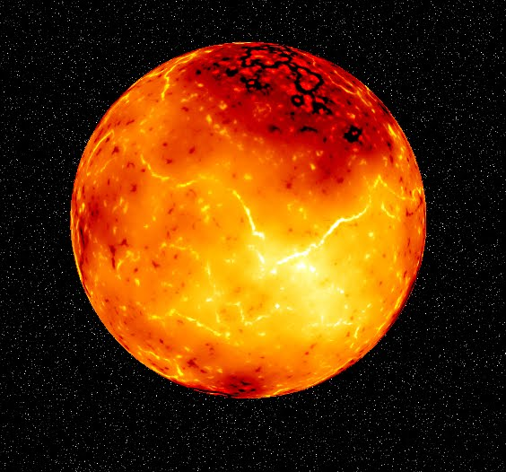
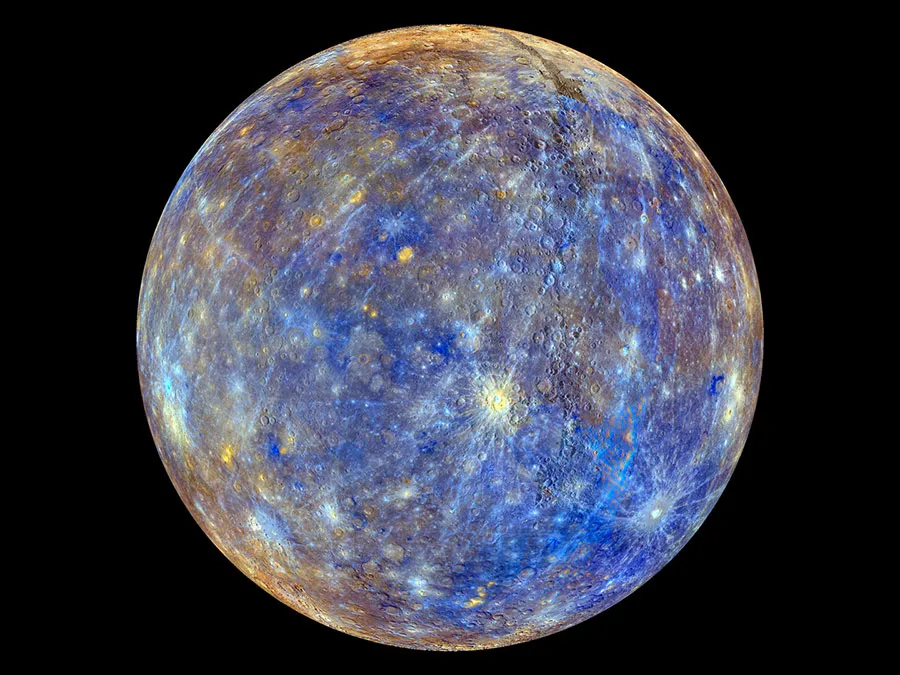

Mặt Trời là ngôi sao ở trung tâm và nổi bật nhất trong Thái Dương Hệ. Khối lượng khổng
lồ của nó (332.900 lần khối lượng Trái Đất) tạo ra nhiệt độ và mật độ đủ lớn tại lõi để xảy ra
phản ứng tổng hợp hạt nhân,làm giải phóng 1 lượng năng lượng khổng lồ, phần lớn phát xạ vào
không gian dưới dạng bức xạ điện từ, với cực đại trong dải quang phổ 400-700 nm mà chúng ta gọi là
ánh sáng khả kiến.

Sao Thủy là hành tinh gần Mặt Trời nhất và là hành tinh nhỏ nhất trong Hệ Mặt Trời
(0,055 lần khối lượng Trái Đất). Sao Thủy không có vệ tinh tự nhiên, và nó chỉ có các đặc trưng địa
chất bên cạnh các hố va chạm đó là các sườn và vách núi, có lẽ được hình thành trong giai đoạn co
lại đầu tiên trong lịch sử của nó. Sao Thủy hầu như không có khí quyển do các nguyên tử trong
bầu khí quyển của nó đã bị gió Mặt Trời thổi bay ra ngoài không gian. Hành tinh này có lõi sắt
tương đối lớn và lớp phủ khá mỏng mà vẫn chưa được các nhà thiên văn giải thích được một cách đầy
đủ.

Sao Kim là hành tinh gần Mặt Trời thứ hai từ Mặt Trời, và là hành tinh có kích thước
tương đương với Trái Đất nhất (0,815 lần khối lượng Trái Đất). Sao Kim không có vệ tinh tự nhiên, và
nó có một bầu khí quyển dày đặc chứa các lớp mây đặc trưng và các tầng khí quyển mà tạo ra hiện
tượng hiệu ứng nhà kính. Sao Kim có nhiệt độ bề mặt cao nhất trong các hành tinh trong Hệ Mặt Trời
(462 °C), thậm chí còn cao hơn cả Sao Thủy mặc dù nó cách Mặt Trời xa hơn. Sao Kim có một lớp vỏ đáy
dày đặc và một lõi sắt-niken nhỏ.

Trái Đất là hành tinh thứ ba từ Mặt Trời, và là hành tinh có khí quyển dày đặc nhất
trong các hành tinh đá. Trái Đất có một vệ tinh tự nhiên, là Mặt Trăng, và nó là hành tinh duy nhất
có sự sống biết đến. Trái Đất có một lớp vỏ đáy dày đặc chứa các tấm vỏ kiến tạo và các tấm vỏ đáy
lục địa. Trái Đất có một lõi sắt-niken lớn, một lớp vỏ ngoài chất đá và một lớp vỏ trong chất sét.
Trái Đất có một khí quyển mỏng chứa các lớp mây đặc trưng, và một lớp tầng bình lưu chứa các tầng
ozone.